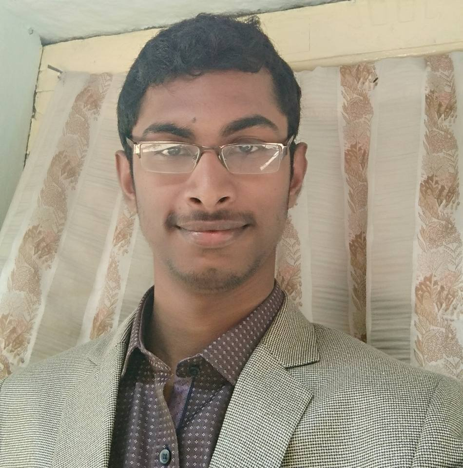
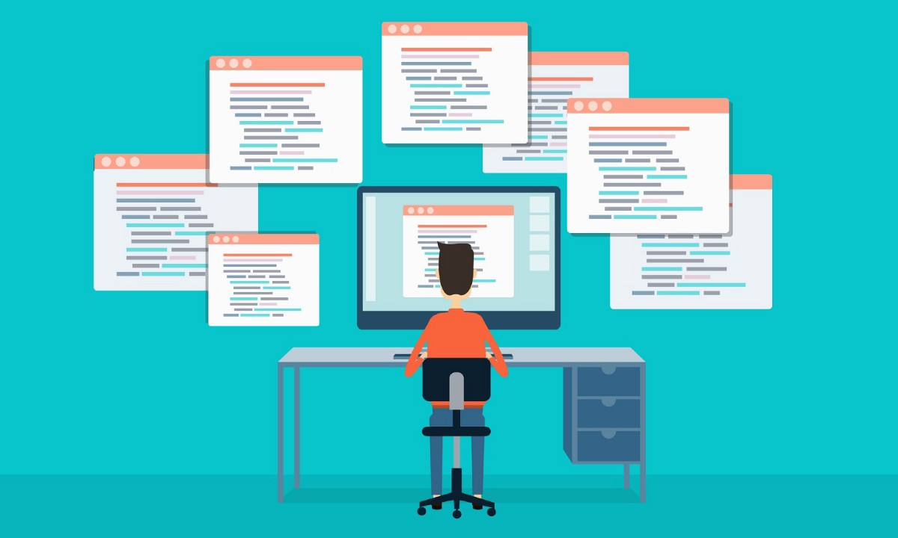
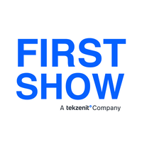
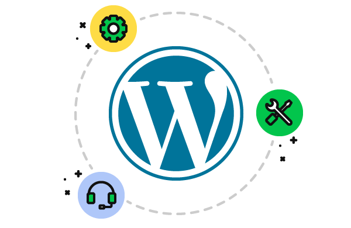

Hello guys, I am Sravan Kumar Reddy Bontha. I am a student pursuing my B.Tech at Mahindra Ecole Centrale. I am aspiring to become a full stack web developer. My love for web Development began rather out of nowhere, when i first came into the exposure
of my first scripting language, HTML. From that moment i have always enjoyed coding HTML, CSS and other languages related to Web Development.

In my journey to become a full stack web Developer, I have learned HTML, CSS, JavaScript to a level of good confidence. I have a basic knowledge of JQuery and SQL(Database). I have got to know about the role of Front End Development in the are of web
development. Now i am aiming to get to know about the back end development, all the while enhancing my knowledge in Front end development technologies.

Fortunately i did an internship at an organization named First Show Tekzenit, who work on developing websites and digital marketing as per client request, as Web Development intern. I have worked for a duration of seven weeks. Since majority of my work
is using WordPress, a content management system(CMS), i got to know what are the pros and cons in using a conventional coding technologies and a CMS like WordPress.

Coming to the web development related work, this web page is my first big shot at practicing more than one technologies on a project. I have done practice related to a particular technology when i learned the concept.I have done web related work using WordPress in my internship. Also i have practiced HTML, CSS and JavaScript on some concepts.
